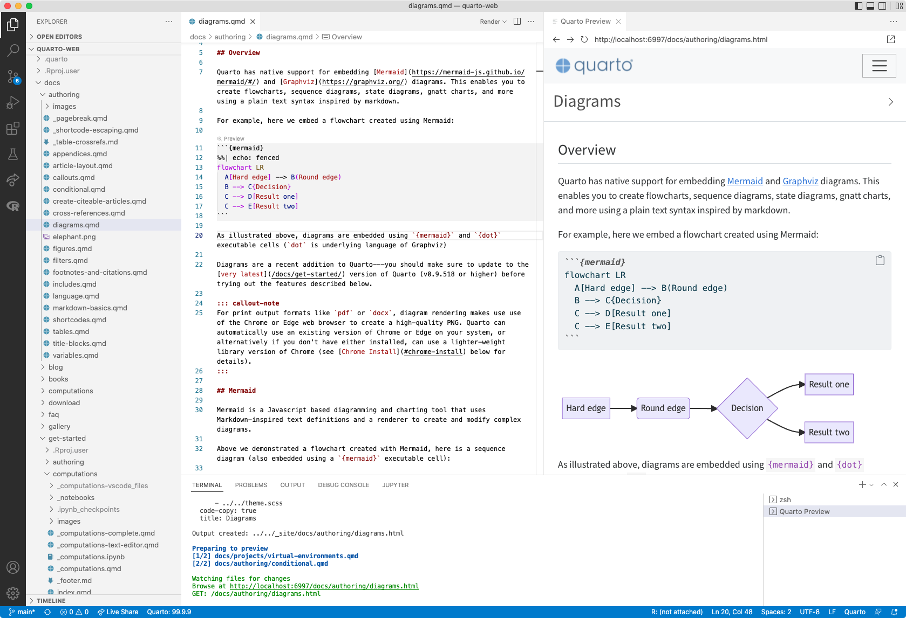
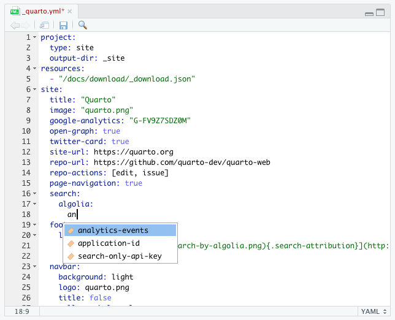

$ quarto --help
Usage: quarto
Version: 1.7.31
Description:
Quarto CLI
Options:
-h, --help - Show this help.
-V, --version - Show the version number for this program.
Commands:
render [input] [args...] - Render files or projects to various document types.
preview [file] [args...] - Render and preview a document or website project.
serve [input] - Serve a Shiny interactive document.
create [type] [commands...] - Create a Quarto project or extension
use <type> [target] - Automate document or project setup tasks.
add <extension> - Add an extension to this folder or project
update [target...] - Updates an extension or global dependency.
remove [target...] - Removes an extension.
convert <input> - Convert documents to alternate representations.
pandoc [args...] - Run the version of Pandoc embedded within Quarto.
typst [args...] - Run the version of Typst embedded within Quarto.
run [script] [args...] - Run a TypeScript, R, Python, or Lua script.
list <type> - Lists an extension or global dependency.
install [target...] - Installs a global dependency (TinyTex or Chromium).
uninstall [tool] - Removes an extension.
tools - Display the status of Quarto installed dependencies
publish [provider] [path] - Publish a document or project to a provider.
check [target] - Verify correct functioning of Quarto installation.
call - Access functions of Quarto subsystems such as its rendering engines.
help [command] - Show this help or the help of a sub-command.Introduction to Quarto
Raukr 2025
Christophe Dervieux
Posit PBC
June 10, 2025
What is Quarto?
Quarto is the next generation of R Markdown:
It unifies and extends it
Quarto …
…is an open-source, scientific, and technical publishing system
- Computations: Python, R, Julia, Observable JS
- Markdown: Pandoc w/ many enhancements
- Output: Documents, presentations, websites, books, blogs

Artwork from “Hello, Quarto” keynote by Julia Lowndes and Mine Çetinkaya-Rundel, presented at RStudio Conference 2022. Illustrated by Allison Horst.
With Quarto…
… you can weave together narrative text and code to produce elegantly formatted output as documents, web pages, blog posts, books and more.
just like R Markdown…
but not just like it, there’s more to it…
Quarto …
unifies + extends the R Markdown ecosystem
Quarto …
unifies + extends the R Markdown ecosystem
unifies for people who love R Markdown
Quarto …
unifies + extends the R Markdown ecosystem
unifies for people who love R Markdown
extends for people who don’t know R Markdown
So, Why a New System?
- The number of languages and runtimes used for scientific discourse is very broad (and the Jupyter ecosystem in particular is extraordinarily popular).
- Quarto is at its core multi-language and multi-engine (supporting Knitr, Jupyter, and Observable today and potentially other engines tomorrow).
- On the other hand, R Markdown is heavily tied to R which limits the number of people it can benefit.
- Quarto is Posit’s attempt to bring 10-years experience of R Markdown to everyone!
How to use Quarto ?
As this is not an R package like R Markdown…
Revisit: What is Quarto?
Quarto is a command line interface (CLI) that renders plain text formats (.qmd, .rmd, .md) OR mixed formats (.ipynb/Jupyter notebook) into static PDF/Word/HTML reports, books, websites, presentations and more.
How to use ?
Integrates with other tools



Quarto Workflow


Quarto Syntax
From R Markdown…
---
title: Hello penguins!
output:
html_document:
toc: true
---
Some **Markdown** content based on _Pandoc_'s markdown
```{r species, fig.width=5, fig.cap="About penguins"}
ggplot(penguins) + aes(x = bill_length_mm, y = bill_depth_mm, color = species) +
geom_point() + labs(x = "Bill length (mm)", y = "Bill depth (mm)")
```Quarto Syntax
… to Quarto
---
title: Hello penguins!
format: html
toc: true
---
Some **Markdown** content based on _Pandoc_'s markdown
```{r}
#| label: species
#| fig-width: 5
#| fig-cap: About penguins
ggplot(penguins) + aes(x = bill_length_mm, y = bill_depth_mm, color = species) +
geom_point() + labs(x = "Bill length (mm)", y = "Bill depth (mm)")
```Quarto formats
Multiple fresh polished formats, built-in, with consistent syntax and features.
| Feature | Quarto | R Markdown |
|---|---|---|
| Basic Formats |
typst_document |
|
| Beamer | beamer | beamer_presentation |
| PowerPoint | pptx | powerpoint_presentation |
| HTML Slides | revealjs |
Quarto formats
Multiple fresh polished formats, built-in, with consistent syntax and features.
| Feature | Quarto | R Markdown |
|---|---|---|
| Cross References | Quarto Crossrefs | |
| Advanced Layout | Quarto Article Layout | |
| Websites & Blogs | ||
| Books | Quarto Books | bookdown |
| Interactivity | Quarto Interactive Documents | Shiny Documents |
| Dashboards | Quarto Dashboards | flexdashboard |
Shared Core Syntax
Core features have similar expression across formats:
Code folding
Tabsets
Theming
Unifies R Markdown
The R Markdown ecosystem was built over nearly a decade (resulting in lots of inconsistency & duplication)
Packages
- tufte
- rticles
- revealjs
- xaringan
- bookdown
- blogdown
- distill
Features
- Floating TOC
- Code folding / copying
- Syntax highlighting
- Page layout
- Theming
- Tabsets
- Section anchors
Some features requires specific R packages and specific syntax.
Code folding / copying
Tabsets
Tabset syntax: https://quarto.org/docs/output-formats/html-basics.html#tabsets
Theming
Universal themeing system (based on SCSS) for all HTML output formats (shared by HTML and RevealJS slides, extendable to work with anything).
Based on core variables defined by bslib (so fully compatible with Shiny, Flexdashboard, & R Markdown themes).
Sample theme file:
Focus on some features
- Cross references
- Advanced page layout
- Figure/layout panels
- Callouts
- Diagrams
- Extensions
- YAML intelligence
- Publishing
Cross References
Cross reference figures, tables, equations, sections, theorems, etc.
Using Plain markdown
Advanced page layout
Advanced page layout features inspired by Tutfe, Distill, and Hugo Prose.
Figure/Layout Panels
Callouts
Work in various formats: HTML, PDF, MS Word, and ePub output
Diagrams
Quarto has native support for embedding Mermaid and Graphviz diagrams.

Typst CSS for nice table output in PDF
New PDF rendering through Typst (https://typst.app)
This is the quickest way to do PDF with already nice features !
# Producing a HTML Table with CSS styles
library(gt)
temps <- data.frame(
year = c(1920:1924),
Jan = c(40.6, 44.2, 37.5, 41.8, 39.3),
Jun = c(58.5, 58.7, 57.8, 52.7, 57.7)
)
nice_col <- scales::col_numeric(
colorspace::diverge_hcl(
n = 9, palette = "Green-Orange"
), domain = c(35, 62)
)
gt(temps) |>
data_color(columns = c(-year), fn = nice_col)Easy Document Branding
Unified branding with a simple YAML file.
YAML file follows a common schema that can be used across Quarto, Shiny, and other tools.

_brand.yml
meta:
# Key identity information, name of the company, links to brand guidelines, etc.
color:
# Semantic colors, e.g. primary, secondary, success, warning, etc.
# color.palette: Named colors in the brand’s color palette.
typography:
# Font family, weight, style, color, and line height for key elements,
# e.g. base, headings and monospace text.
# typography.fonts: Font definitions for Google, remote or bundled fonts.
logo:
# Files or links to the brand’s logo at various sizes.
defaults:
# Additional context-specific settings beyond the basic brand colors and typography.
# These could be options, for example, that are used by Bootstrap in Quarto or Shiny. Works for HTML and PDF through Typst.
Quarto Extensions
In short, what are Quarto Extensions?
Extensions are the way to add some features to Quarto, like R packages with R Markdown
List of existing extension at https://quarto.org/docs/extensions/
Shortcodes are special markdown directives that generate various types of content. For example, to embed videos in a document:
Filters are a flexible and powerful tool for introducing new global behaviors and/or new markdown rendering behaviors. For example,
Formats enable you to create new output formats by bundling together document options, templates, stylesheets, and other content.
For example,
YAML Intelligence
- YAML code completion for config files, front matter, and chunk options
- Real-time diagnostics and clear errors at render time for invalid YAML
Completion

Diagnostics

Publishing
https://quarto.org/docs/publishing/
Integrated quarto publish command that targets a variety of services
> quarto publish --help
Usage: quarto publish [provider] [path]
Version: 1.7.31
Description:
Publish a document or project to a provider.
Available providers include:
- Quarto Pub (quarto-pub)
- GitHub Pages (gh-pages)
- Posit Connect (connect)
- Posit Cloud (posit-cloud)
- Netlify (netlify)
- Confluence (confluence)
- Hugging Face Spaces (huggingface)
Accounts are configured interactively during publishing.
Manage/remove accounts with: quarto publish accountsQuarto Presentations
https://quarto.org/docs/presentations/revealjs/demo/
- Based on a (heavily) customized version of RevealJS:
- Image, video, and iframe backgrounds
- PDF Printing
- Speaker view
- Plugin system
- Many features inspired by xaringanExtra:
- Chalkboard / drawing on slides
- Multicast (synced presenter / viewer slides)
- Slide tone (for accessibility)
- Absolute positioning of slide elements
Quarto Projects
A Quarto Project is a directory that contains a file called _quarto.yml.
Organizing content as a project to gain project’s features and enhanced outputs
- Projects have a type (website, book, manuscript, …) driving behaviors and specific features
- Shared metadata from project to sub-folder level
- Reproducibility with computations can be controlled (cache, freeze)
- Pre and Post render scripts can be added
- Project Profile for distinct project behavior
Quarto Websites
Arbitrary content depth / organization
Multi-level navigation (navbar / sidebar / hybrid)
Full text search (client side or Algolia)
Freezing computational output
Example: https://quarto.org and more at Gallery
Quarto Books
Inherit features of Quarto websites (navigation, search, etc.)
Support cross references across chapters
Formats include HTML, PDF, MS Word, and ePub
Examples: Gallery
Quarto Blogs
Inherit features of Quarto websites (navigation, search, etc.)
Automatically generated listing and RSS feed
Customizable about page
Examples: https://quarto.org/docs/blog/ and more at Gallery
Quarto Journals
https://quarto.org/docs/journals/
Custom format system designed to accomodate the creation of articles for publishing in professional Journals:
The ability to flexibly adapt the native LaTeX templates provided by Journals for use with Pandoc.
The use of spans and divs to apply formatting (which enables targeting by CSS for HTML output and LaTeX macros/environments for PDF output).
A standardized schema for authors and affiliations so that you can express this data once and then have it automatically formatted according to the styles required for various Journals.
The use of Citation Style Language (CSL) to automate the formatting of citations and bibliographies according to whatever style is required by various Journals.
Quarto Tools
Quarto CLI
RStudio IDE
VS Code Extension
Jupyter Lab
Text Editors
Visual Editor
Quarto CLI
Core component that drives Quarto rendering. This is the only thing you need to render plain markdown (it includes Pandoc 2.18).
- Add
knitrto render documents w/ R - Add
jupyterto render with Jupyter kernels
Like git, this is a system level component that is used by RStudio, VS Code, Jupyter Lab, terminal sessions, etc.
Download/install: https://quarto.org/docs/get-started/
RStudio IDE
Current release of RStudio IDE has Quarto tooling on-par w/ R Markdown tooling

VS Code Extension
https://quarto.org/docs/tools/vscode.html
- Render command with integrated preview pane
- Syntax highlighting for markdown and embedded languages
- Completion for embedded languages (e.g. Python, R, Julia, LaTeX, etc.)
- Completion and diagnostics for project files and document/cell options
- Completion for citations and cross references
- Commands and key-bindings for running cells and selected line(s)
- Automatic navigation to render errors for Jupyter, Knitr, and YAML
- Live preview for embedded mermaid and graphviz diagrams
- Assist panel for contextual help, image preview, and math preview
- Code snippets for common markdown constructs
- Code folding and document outline for navigation within documents
- Workspace symbol provider for navigation across project files
Jupyter Lab
Text Editors
Use
quarto previewwith any text editor:Live reloading for documents and websites/books.
Quarto modes/extensions for various editors:
Visual Editor
https://quarto.org/docs/visual-editor/
The Quarto visual editor provides a WYSIWYM editing interface for all of Pandoc markdown
Tables, citations, cross-references, footnotes, divs/spans, definition lists, attributes, raw HTML/TeX, etc.
Includes support for executing code cells and viewing their output inline.
Learning More
Slides: https://cderv.github.io/raukr-2025-quarto
Getting started: https://quarto.org/docs/get-started/
User guide: https://quarto.org/docs/guide/
Gallery: https://quarto.org/docs/gallery/
Awesome Quarto: https://github.com/mcanouil/awesome-quarto
Questions?
Follow along at https://cderv.github.io/raukr-2025-quarto/ and https://quarto.org